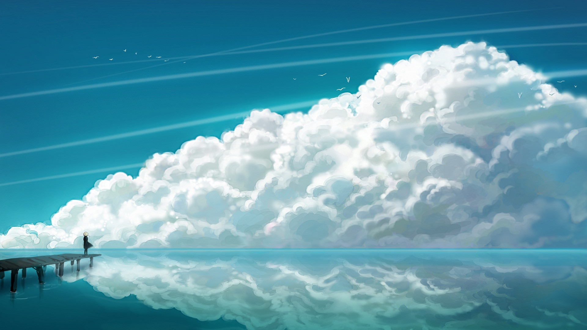

About me
Born in France, raised in Tanzania by two entrepreneurs in love with adventure and wilderness, I was immersed in the tourism industry from a very young age. Speaking 3 languages fluently and avid for more knowledge, I went to Europe to pursue a Bachelor in Business Management from one of the top schools on the continent, ESCP Europe.


All was going well, but the further my degree progressed, the more I felt unsure if I liked the path I was on. Graduating during the peak of the COVID-19 pandemic did not ease this uncertainty, instead it fuelled my curiosity to pick up a new skill: web development.
What started out as a Khan Academy lesson every now & then to pass time during lockdown, became re-building a website for tourism company in 2022! And I wanted more.
I applied to few universities in Europe and the Americas for a conversion master, which is what led me to move to Dublin, Ireland in 2023. This new chapter was exciting and exceptionally challenging, coming in with self-taught coding fundamentals & new found motivation to make it into the tech space. Two incredible years later, I am proud (and a little bit in disbelief) to hold a Master of Science in Computer Science with a focus on Data Science from the Technological University of Dublin!
The big next step: finding a job. Anyone, graduates especially, in the job market 2024-2025 can attest how hard it is to be considered, let alone, successfully secure a position. It took me 6 months of hard work- re-building my portfolio, attending events, marketing myself, coding challenges, interview prep and Linkedin optimisation, to land the intern role at Boundless.
This opportunity was literally heaven-sent. No complicated 15-step application process, 2 round of interviews & a take-home coding challenge, all within a week. I could not believe my eyes when the offer email came through the next Tuesday morning. I cried honest tears, "they chose me!!! ME!! They think I'm a good candidate for the role!!". Getting this offer pulled me out of the imposter syndrome well I'd slowly been drowning in, rejection email after rejection email.
I am so incredibly thankful for the opportunity. I've learned so much about working in a team, working independently, working from home and above all, the Boundless way-of work and what they stand for: "Growing through experimentation, overcoming new challenges with optimism and an open mind".
Outside of technology, I do art and skateboarding.
Drawing has been a passion of mine since before I could even write. Pencil, charcoal, watercolor, digital- you name it, I've probably done it. If not, then I can't wait to try it! I recently took up crochet, and I fell in love. It feels like one of those things my soul did in their past life, because it feels so natural. I can spend hours crocheting in the evenings, I crochet when I commute (bus, train, plane), I literally carry my crochet kit everywhere I know I'll have to wait. I even take it with me to the skatepark.
I took up skateboarding during the pandemic. It was going through a resurgence in popularity, I was stuck at home and thought "why not?". Starting to skateboard in your 20s is definitely a choice, and I am glad I made it. I love it. It's so incredibly challenging but equally rewarding. High risk, high reward. It's also been such a great sport to stay active, socialise and integrate a community here in Ireland.
All in all, this has been my journey so far. I'm excited to see what the universe has in store for me ::smiley-face.
~ Anaïs
